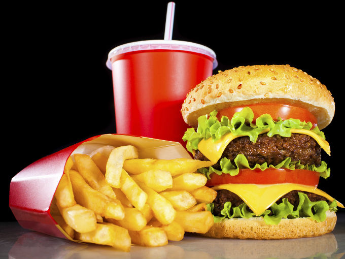
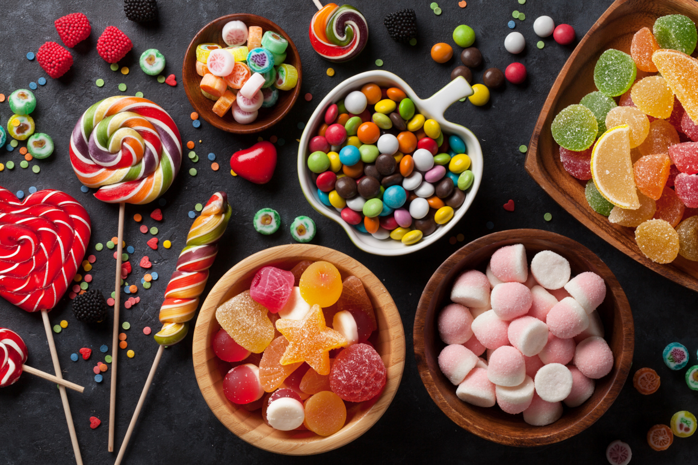

AMOR POR LA COMIDA SALADA
La alimentación ha sido siempre un aspecto crucial para la especie humana. El modo en que obtenemos alimentos de la naturaleza condiciona cómo somos, cómo vivimos y cómo nos relacionamos.Por supuesto, comer ha sido siempre una condición necesaria para permanecer vivos. Sin embargo, el acto de comer tiene su parte de goce.
El mundo de la cocina y el arte de comer bien ha ido desarrollando una mirada cultural hacia la alimentación y la gastronomía propia de cada lugar.
En estos momentos quiero:
- Hamburguesa
- Pizza
- Pepito
- Pasta con cualquier tipo de salsa
- Perro Caliente
- Empanadas (muchas)

AMOR POR LOS DULCES
Es un completo hecho que a todos (o al menos a la mayoría, contándome) nos encanta comer y sobre todo si es algo dulce y apetecible. He de admitir y es un gran error de mi parte que si tengo la oportunidad de comprarme un dulce, lo hago, desde helados, chocolates y galletas, es una completa adicción que es bastante dañina si no es controlada porque en proporciones exageradas nos pueden causar enfermedades como la diabetes, ¡pero es tan difícil!, más si existe la maravilla del chocolate.
Los caramelos o dulces por si mismos son unas drogas, ¿por qué digo esto?, porque debido al consumo de éste, hace que nuestro cuerpo libere principalmente tres sustancias químicas o neurotransmisores que son las responsables: la serotonina, la dopamina y la betaendorfina.
Basicamente yo como dulce por cualquier excusa: por felicidad, tristeza, ansiedad, porque voy a estudiar, porque no tengo nada que hacer o simplemente porque quiero.
En estos momentos necesito:
- Golfeados
- Nutella o cualquier tipo de chocolate
- Mantequilla de mani
- Oreos
- Mil Hojas
- Flips
- Helados
